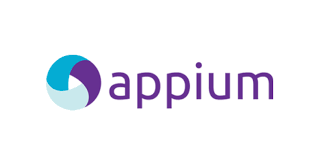

We Are An Automation
Community
Selenium
Selenium is an open-source framework designed for automating web browsers. It provides a suite of tools for web application testing and supports various programming languages, including Java, C#, Python, Ruby, and JavaScript. Selenium allows testers to write scripts in these languages to interact with web elements, simulate user actions, and perform automated testing across different browsers and platforms.

Appium
Appium is an open-source automation tool designed for mobile applications, allowing testers to automate the testing of native, hybrid, and mobile web applications on both Android and iOS platforms. Appium follows the WebDriver protocol and is built on top of Selenium, providing a familiar interface for automation engineers.